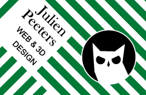
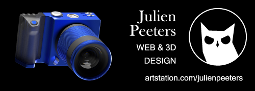
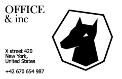
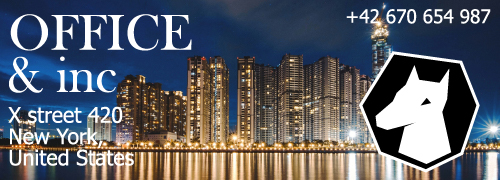
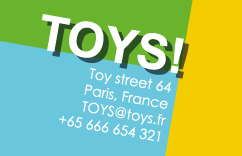
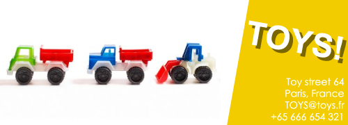
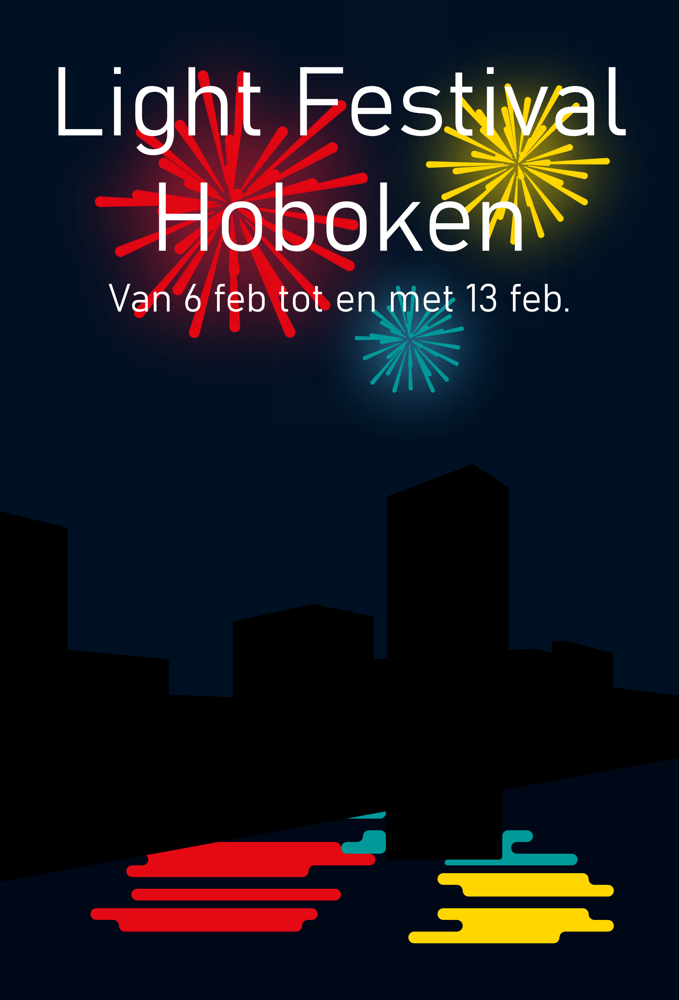

Valentijn's Actie
poster
Tijdens het maken van deze poster, heb ik deftig mijn tanden gezet in Pantone kleuren; het was niet erg lastig om de kleuren te vinden, maar ik ondervond wel dat voor gradients het beter is als je gelijke felheid van kleuren kiest.

Typografie
     Tijdens deze opdracht probeerde ik wat meer vindingrijk te zijn. Het zoeken van passende foto's duurde niet lang, maar de logo's zelf duurde veel langer om klaar te krijgen.
Licht Festival
poster

Met deze poster wou ik het contrast tussen de nacht lucht en het vuurwerk, samen met een best simpele stijl om niet van de boodschap af te leiden.